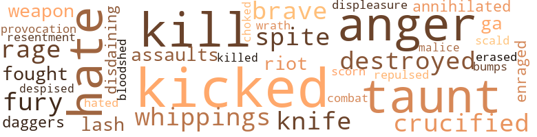

10 music-related terms matched in this text.
Most frequent terms in this topic: melody (2); phrase (1); tune (1); belted (1); songs (1)

belt_out.v.01
Definition: sing loudly and forcefully
| word |
sentence |
| belted |
He belted his barrels , with many a scheme re - volving in his mind , none of which quite satisfied him , or seemed , on the whole , expedient . |
music.n.01
Definition: an artistic form of auditory communication incorporating instrumental or vocal tones in a structured and continuous manner
| word |
sentence |
| music |
As she merged into womanhood , unpro - tected , uncherished , uncared for , there fell on her ear the music of love , awakening an intensity of emotion long dormant . |
musical_instrument.n.01
Definition: any of various devices or contrivances that can be used to produce musical tones or sounds
| word |
sentence |
| instrument |
She was thus tortured when Mr. Bellmont came in , and , making inquiries which she did not , because she could not , answer , approached her ; and seeing her situation , quickly removed the instrument of torture , and sought his wife . |
passage.n.06
Definition: a short section of a musical composition
| word |
sentence |
| passages |
She received her like a returning wanderer ; seriously urged her to accept of Christ ; ex - plained the way ; read to her from the Bible , and remarked upon such passages as applied to her state . |
phrase.n.02
Definition: a short musical passage
| word |
sentence |
| phrase |
A few years ago , within the compass of my narrative , there appeared often in some of our New England villages , professed fugitives from slavery , who recounted their personal experi - ence in homely phrase , and awakened the indig - nation of non-slaveholders against brother Pro . |
singing.n.01
Definition: the act of singing vocal music
| word |
sentence |
| singing |
Nig went as she was told , and her clear voice was heard as she went , singing in joyous notes the relief she felt at the removal of one of her tormentors . |
song.n.01
Definition: a short musical composition with words
| word |
sentence |
| songs |
Soon she had all their sacred songs at com - mand , and enlivened her toil by accompanying it with this melody . |
tune.n.01
Definition: a succession of notes forming a distinctive sequence
| word |
sentence |
| tune |
Recov - ering from her expected illness , she once more commenced toil for herself and child , in a room obtained of a poor woman , but with better for - tune . |
| melody |
Such perfect contrast in the melody and pray - ers of these good people to the harsh tones which fell on her ears during the day . |
| melody |
Soon she had all their sacred songs at com - mand , and enlivened her toil by accompanying it with this melody . |
58 violence-related terms matched in this text.
Most frequent terms in this topic: kicked (4); anger (3); hate (3); kill (3); destroyed (2)

aggravation.n.02
Definition: unfriendly behavior that causes anger or resentment
| word |
sentence |
| provocation |
No matter what occurred to ruffle her , or from what source provocation came , real or fancied , a few blows on Nig seemed to relieve her of a portion of ill-wilL These were days when Fido was the entire confidant of Frado . |
anger.n.01
Definition: a strong emotion; a feeling that is oriented toward some real or supposed grievance
| word |
sentence |
| anger |
How Mag toiled and suffered , yielding to fits of desperation , bursts of anger , and uttering curses too fearful to repeat . |
| anger |
Mary stood with anger flashing in her eyes . |
| anger |
Flushed with anger , she rose and greeted her with , " What are you gone so long , for ? |
battle.v.01
Definition: battle or contend against in or as if in a battle
| word |
sentence |
| combat |
" She has such confidence in me that she will do just as I tell her ; so we found a seat under a shady tree , and there I took the opportunity to combat the notions she seemed to entertain respecting the loneliness of her condition and want of sympathizing friends . |
bloodshed.n.01
Definition: the shedding of blood resulting in murder
| word |
sentence |
| bloodshed |
There rushed on Mary 's mental vision a picture of bloodshed , in which she was the perpetrator , and the sad consequences of what was so nearly an actual occurrence . |
bump.n.01
Definition: a lump on the body caused by a blow
| word |
sentence |
| bumps |
Same old story , is it ; knocks and bumps ? |
contemn.v.01
Definition: look down on with disdain
| word |
sentence |
| disdaining |
Such was Mag 's experience ; and disdaining to ask favor or friendship from a sneering world , she resolved to shut herself up in a hovel she had often passed in better days , and which she knew to be untenanted . |
| scorn |
Many of less piety would scorn to present so doleful a figure ; Mrs. B. had shaved her glossy ringlets ; and , in her coarse cloth gown and an - cient bonnet , she was anything but an enticing object . |
| despised |
I assured her that mother 's views were by no means general ; that in our part of the country there were thousands upon thousands who favored the elevation of her race , disapproving of oppression in all its forms ; that she was not unpitied , friendless , and utterly despised ; that she might hope for better things in the future . |
crucify.v.01
Definition: kill by nailing onto a cross
| word |
sentence |
| Crucified |
Crucified the hopes that cheered me , All that to the earth endeared me ; Love of wealth and fame and power , Love , - all have been crucified . |
| crucified |
Crucified the hopes that cheered me , All that to the earth endeared me ; Love of wealth and fame and power , Love , - all have been crucified . |
dagger.n.01
Definition: a short knife with a pointed blade used for piercing or stabbing
| word |
sentence |
| daggers |
To do this in opposition to Mrs. Bellmont 's wishes , would be like encountering a whirlwind charged with fire , daggers and spikes . |
destroy.v.04
Definition: put (an animal) to death
| word |
sentence |
| destroyed |
" No ! " screamed she ; and giving a sudden jerk which destroyed Seth 's equilibrium , left him sprawling on the floor , while she escaped through the open door . " |
| destroyed |
From early dawn until after all were retired , was she toiling , overworked , disheartened , long - ing for relief r Exposure from heat to cold , or the reverse , often destroyed her health for short intervals . |
displeasure.n.01
Definition: the feeling of being displeased or annoyed or dissatisfied with someone or something
| word |
sentence |
| displeasure |
Jane went to confer with her Aunt about the affair ; and learned from her the retreat She would gladly have concealed her in her own chamber , and ministered to her wants ; but she was dependent on Mary and her mother for care , and any displeasure caused by attention to Nig , was seriously felt . |
eliminate.v.03
Definition: kill in large numbers
| word |
sentence |
| annihilated |
She had passed into an insen - sibility no childish taunt could penetrate , else she would have reproached herself as she passed familiar scenes , for extending the separation once so easily annihilated by steadfast integrity . |
enrage.v.01
Definition: put into a rage; make violently angry
| word |
sentence |
| enraged |
The discrepancy greatly enraged Mrs. Bell - mont . |
erase.v.01
Definition: remove from memory or existence
| word |
sentence |
| erased |
He was no stranger to his mother 's nature ; but years of absence had erased the occurrences once so familiar , and he asked , " Is this that pretty little Nig , Jack writes to me about , that you are so severe upon , mother ? " |
fight.v.02
Definition: fight against or resist strongly
| word |
sentence |
| fought |
She was removed to a room built out from the main building , used formerly as a workshop , where cold and rain found unob - structed access , and here she fought with bitter reminiscences and future prospects till she be - came reckless of her faith and hopes and person , and half wished to end what nature seemed so tardily to take . |
fury.n.01
Definition: a feeling of intense anger
| word |
sentence |
| fury |
Among the sheep was a willful leader , who al - ways persisted in being first served , and many times in his fury he had thrown down Nig , till , provoked , she resolved to punish him . |
| fury |
To brave her mother 's fury , nearly overcame her , but the consolations of a kind father and aunt cheered her on . |
| rage |
is this the way you answer me ? " and taking a large carving knife from the table , she hurled it , in her rage , at the defenceless girl . |
| rage |
Insulted , full of rage , Mrs. Bellmont rushed to her husband , and commanded him to notice this insult ; to whip that child ; if he would not do it , James ought . |
gag.v.06
Definition: cause to retch or choke
| word |
sentence |
| choked |
It was a great effort for Frado to cease sobbing ; but she dared not be seen below in tears ; so she choked her grief , and descended to her usual toil . |
hate.n.01
Definition: the emotion of intense dislike; a feeling of dislike so strong that it demands action
| word |
sentence |
| hate |
Ere long , the mother 's inveterate hate crept out into some neighbor 's enclosure , and , caught up hastily , they passed the secret round till it became none , and Lewis was sent for , the brother by whom Jack was employed . |
| hate |
when nurtured in my breast , To love a stranger , friendship made me blest ; - Friendship , the dear peculiar bond of youth , When every artless bosom throbs with truth ; Untaught by worldly wisdom how to feign ; And check each impulse with prudential reign ; " When all we feel our honest souls disclose - In love to friends , in open hate to foes ; No varnished tales the lips of youth repeat , No dear-bought knowledge purchased by deceit " Byron . |
hate.v.01
Definition: dislike intensely; feel antipathy or aversion towards
| word |
sentence |
| hated |
Although suffering from their joint severity , she felt safer than to be thrown wholly upon an ardent , passionate , unrestrained young lady , whom she always hated and felt it hard to be obliged to obey . |
| hate |
" But you forget what our good minister told us last week , about doing good to those that hate us . " |
kick_back.v.02
Definition: spring back, as from a forceful thrust
| word |
sentence |
| kicked |
As she ex - pected , Mrs. Bellmont , enraged , approached her , and kicked her so forcibly as to throw her upon the floor . |
| kicked |
" I do mean it The child does as much work as a woman ought to ; and just see how she is kicked about ! " |
| kicked |
She 's not been seen since morning , and then she was kicked out of the house . " |
| kicked |
Oh , I wish I had my mother back ; then I should not be kicked and whipped so . |
kill.v.10
Definition: cause the death of, without intention
| word |
sentence |
| kill |
Many times would Frado steal up into Jenny 's room , when she knew she was tortured by her mis - tress ' malignity , and tell some of her own encounters with her , and tell her she might " be sure it would n't kill her , for she should have died long before at the same treatment " Susan and her child succeeded Jenny as vis - itors . |
| kill |
If you tell Aunt Abby , I 'll certainly kill you , " said she , terrified . |
| kill |
" Yes , yes ! " she repeated sarcastically , " you know these niggers are just like black snakes ; you ca n't kill them . |
| killed |
If she was n't tough she would have been killed long ago . |
knife.n.02
Definition: a weapon with a handle and blade with a sharp point
| word |
sentence |
| knife |
is this the way you answer me ? " and taking a large carving knife from the table , she hurled it , in her rage , at the defenceless girl . |
| knife |
Quickly looking about , she took the plate , called Fido to wash it , which he did to the best of his ability ; then , wiping her knife and fork on the cloth , she proceeded to eat her dinner . |
malice.n.01
Definition: feeling a need to see others suffer
| word |
sentence |
| spite |
Frado had merged into womanhood , and , retaining what she had learned , in spite of the few privileges enjoyed formerly , was striving to enrich her mind . |
| spite |
At dark Jack came in , and seeing Mary , accosted her with , " So you thought you 'd vent your spite on Nig , did you ? |
| malice |
Ex - cited by so much indulgence of a dangerous pas - sion , she seemed left to unrestrained malice ; and snatching a towel , stuffed the mouth of the suf - ferer , and beat her cruelly . |
rape.n.03
Definition: the crime of forcing a woman to submit to sexual intercourse against her will
| word |
sentence |
| assaults |
She did not know , before , that she had a power to ward off assaults . |
repel.v.03
Definition: force or drive back
| word |
sentence |
| repulsed |
Any word of complaint was severely repulsed or cru - elly punished . |
resentment.n.01
Definition: a feeling of deep and bitter anger and ill-will
| word |
sentence |
| resentment |
She only smothered her resentment until a convenient opportunity offered . |
riot.n.01
Definition: a public act of violence by an unruly mob
| word |
sentence |
| riot |
She could riot feel relentings that her former home was abandoned , and yet , should she be in need of succor could she obtain it from one who would now so grudgingly bestow it ? |
scald.n.01
Definition: a burn cause by hot liquid or steam
| word |
sentence |
| scald |
Mr. Bellmont raised his calm , determined eye full upon her , and said , in a decisive manner : " You shall not strike , or scald , or skin her , as you call it , if she comes back again . |
tabun.n.01
Definition: the first known nerve agent, synthesized by German chemists in 1936; a highly toxic combustible liquid that is soluble in organic solvents and is used as a nerve gas in chemical warfare
| word |
sentence |
| ga |
The first summer passed pleasantly , and the wages earned were expended in ga ^ pnents neces - sary for health and cleanliness . |
twit.n.02
Definition: aggravation by deriding or mocking or criticizing
| word |
sentence |
| taunts |
What a relief to her to be freed from the gnawing taunts of her adversary . |
| taunt |
She had passed into an insen - sibility no childish taunt could penetrate , else she would have reproached herself as she passed familiar scenes , for extending the separation once so easily annihilated by steadfast integrity . |
| taunts |
She availed herself of the only alternative , abuse and taunts , as they returned from school . |
weapon.n.01
Definition: any instrument or instrumentality used in fighting or hunting
| word |
sentence |
| weapon |
By this unexpected demonstration , her mis - tress , in amazement , dropped her weapon , desist - ing from her purpose of chastisement . |
weather.v.01
Definition: face and withstand with courage
| word |
sentence |
| brave |
The invalid , Jane , would gladly befriend her ; but she had not the strength to brave the iron will of her mother . |
| brave |
To brave her mother 's fury , nearly overcame her , but the consolations of a kind father and aunt cheered her on . |
whip.v.04
Definition: strike as if by whipping
| word |
sentence |
| lash |
He was a fine , straight negro , whose back showed no marks of the lash , erect as if it never crouched beneath a burden . |
whipping.n.01
Definition: beating with a whip or strap or rope as a form of punishment
| word |
sentence |
| whippings |
The usual amount of scolding , but fewer whippings . |
| whippings |
We had no work hired out ; she did the work of two girls - " " And got the whippings for two with it ! " remarked Mr. Bellmont . |
wrath.n.01
Definition: intense anger (usually on an epic scale)
| word |
sentence |
| wrath |
Aunt Abby had a glimpse of Nig as she passed out of the yard ; but to arrest her , or shew her that she would shelter her , in Mrs. Bellmont 's presence , would only bring reserved wrath on her defenceless head . |
51 religion-related terms matched in this text.
Most frequent terms in this topic: heaven (13); prayer (7); God (6); Christ (5); religion (3)
christian.n.01
Definition: a religious person who believes Jesus is the Christ and who is a member of a Christian denomination
| word |
sentence |
| Christians |
" I thought you Christians held to going to church , " remarked Mr. B. " Yes , but who ever thought of having a nig - ger go , except to drive others there ? |
church.n.02
Definition: a place for public (especially Christian) worship
| word |
sentence |
| church |
Her clothing was yet poor and scanty ; she was not blessed with a Sunday attire , * for she was never permitted to attend church with her mis - tress . |
| church |
" I thought you Christians held to going to church , " remarked Mr. B. " Yes , but who ever thought of having a nig - ger go , except to drive others there ? |
eden.n.01
Definition: any place of complete bliss and delight and peace
| word |
sentence |
| heaven |
I shall meet you in heaven . |
| heaven |
Teach Charlie the way to heaven ; lead him up as you come . " |
| heaven |
As if waiting for this petition , the Angel of Death severed the golden thread , and he was in heaven . |
| heaven |
She retired at night to mourn over her unfitness for heaven , and gaze out upon the stars , which , she felt , studded the entrance of heaven , above which James reposed in the bosom of Jesus , to which her desires were has - tening . |
| heaven |
She retired at night to mourn over her unfitness for heaven , and gaze out upon the stars , which , she felt , studded the entrance of heaven , above which James reposed in the bosom of Jesus , to which her desires were has - tening . |
| heaven |
She warned her against stifling that voice which was calling her to heaven ; echoed the farewell words of James , and told her to come to her with her difficulties , and not to delay a duty so important as attention to the truths of religion , and her soul 's interests . |
| heaven |
If she should get to heaven at all , she would never be as high up as he . |
| Heaven |
He inquired of the origin of her anxiety , of her progress up to this time , and endeavored to make Christ , instead of James , the attraction of Heaven . |
| heaven |
Frado pondered ; her mistress was a professor of religion ; was she going to heaven ? |
| heaven |
Only a few months since , Aunt Abby entered heaven . |
| heaven |
Jack and his wife rest in heaven , disturbed by no intruders ; and Susan and her child are yet with the living . |
| heaven |
James began to speak of life as closing ; of heaven , as of a place in immediate prospect ; of aspirations , which waited for fruition in glory . |
| heaven |
Her doubt was , is there a heaven for the black ? |
| heaven |
She knew she was unfit for any heaven , made for whites or blacks . |
god.n.03
Definition: a man of such superior qualities that he seems like a deity to other people
| word |
sentence |
| God |
She did not love God ; she did not serve him or know how to . |
| God |
But God prepares the way , when human agencies see no path . |
| God |
" Did God make you ? " |
| God |
" Did the same God that made her make me ? " |
| God |
James and Aunt Abby hoped it was the springing of good seed sown by the Spirit of God . |
| God |
She knew her instructions did not har - monize with those of the man of God or Aunt Abby 's . |
idol.n.01
Definition: a material effigy that is worshipped
| word |
sentence |
| idol |
Nig looked for a change in her tyrant ; what could subdue her , if the loss of her idol could not ? |
| idol |
She was indeed the idol of her mother , and more nearly resembled her in dis - position and manners than the others . |
imitation.n.01
Definition: the doctrine that representations of nature or human behavior should be accurate imitations
| word |
sentence |
| imitations |
The pastimes of his boyhood were ever freshly revived by witnessing the games of his own sons as they rallied about the same goal his youthful feet had often won ; as well as by the amuse - ments of his daughters in their imitations of maternal duties . |
jesus.n.01
Definition: a teacher and prophet born in Bethlehem and active in Nazareth; his life and sermons form the basis for Christianity (circa 4 BC - AD 29)
| word |
sentence |
| Jesus |
While she was exercised with these desires and aspirations , she attended an evening meet - ing with Aunt Abby , and the good man urged all , young or old , to accept the offers of mercy , to receive a compassionate Jesus as their Sa - viour . |
messiah.n.01
Definition: any expected deliverer
| word |
sentence |
| Christ |
She received her like a returning wanderer ; seriously urged her to accept of Christ ; ex - plained the way ; read to her from the Bible , and remarked upon such passages as applied to her state . |
| Christ |
He inquired of the origin of her anxiety , of her progress up to this time , and endeavored to make Christ , instead of James , the attraction of Heaven . |
| Christ |
" Come to Christ , " he urged , " all , young or old , white or black , bond or free , come all to Christ for pardon ; repent , believe . " |
| Christ |
" Come to Christ , " he urged , " all , young or old , white or black , bond or free , come all to Christ for pardon ; repent , believe . " |
| Christ |
She read her Bible carefully , and as often as an opportunity presented , which was when entirely secluded in her own apartment , or by Aunt Abby 's side , who kindly directed her to Christ , and instructed her in the way of salva - tion . |
praise.n.02
Definition: offering words of homage as an act of worship
| word |
sentence |
| praise |
His coming was longed for by Frado , who had known him well during her long sojourn in the family ; and his praise of her nice butter and cheese , from which his table was supplied , she knew he felt as well as spoke . |
prayer.n.01
Definition: the act of communicating with a deity (especially as a petition or in adoration or contrition or thanksgiving)
| word |
sentence |
| prayer |
When he offered prayer , Frado stole to the door that she might hear of the heavenly bliss of one who was her friend on earth . |
| prayer |
The prayer caused profuse weeping , as any tender reminder of the heaven-born was sure to . |
| prayer |
Aunt Abby would take her to evening meetings , held in the neigh - borhood , which Mrs. B. never attended ; and im - part to her lessons of truth and grace as they walked to the place of prayer . |
| prayer |
While this scene was passing , Frado was trying to utter the prayer of the publican , " God be merciful to me a sinner . " |
| prayer |
Her mistress had told her it would " do no-good for her to attempt prayer ; prayer was for whites , not for blacks . |
| prayer |
Her mistress had told her it would " do no-good for her to attempt prayer ; prayer was for whites , not for blacks . |
| prayer |
She kissed him , and sank on her knees by his bedside ; his hand rested on her head ; his eyes were closed ; his lips moved in prayer for this disconsolate child . |
preacher.n.01
Definition: someone whose occupation is preaching the gospel
| word |
sentence |
| preacher |
Want is a more power - ful philosopher and preacher . |
religion.n.01
Definition: a strong belief in a supernatural power or powers that control human destiny
| word |
sentence |
| religion |
She warned her against stifling that voice which was calling her to heaven ; echoed the farewell words of James , and told her to come to her with her difficulties , and not to delay a duty so important as attention to the truths of religion , and her soul 's interests . |
| religion |
Frado pondered ; her mistress was a professor of religion ; was she going to heaven ? |
| faith |
She was removed to a room built out from the main building , used formerly as a workshop , where cold and rain found unob - structed access , and here she fought with bitter reminiscences and future prospects till she be - came reckless of her faith and hopes and person , and half wished to end what nature seemed so tardily to take . |
| religion |
One cause of the alienation was that she did not give her right in the homestead to John , and leave it forever ; another was that she was a professor of religion , ( so was Mrs. Bellmont ;) but Nab , as she called her , did not live accord - ing to her profession ; another , that she would sometimes give Nig cake and pie , which she was never allowed to have at home . |
religion.n.02
Definition: an institution to express belief in a divine power
| word |
sentence |
| Religion |
" Religion was not meant for niggers , " she said ; when the husband and brothers were absent , she would drive Mrs. B. and Mary there , then return , and go for them at the close of the service , but never remain . |
sacrifice.v.04
Definition: make a sacrifice of; in religious rituals
| word |
sentence |
| sacrifice |
To be thus supplanted , was not to be thought of He would sacrifice everything but his inheritance to secure his betrothed . |
saint.n.02
Definition: person of exceptional holiness
| word |
sentence |
| saints |
But there was one little spot seldom penetrar ted by her mistress ' watchful eye : this was her room , uninviting and comfortless ; but to her - self a safe retreat Here she would listen to the pleadings of a Saviour , and try to penetrate the veil of doubt and sin which clouded her soul , and long to cast off the fetters of sin , and rise to the communion of saints . |
satan.n.01
Definition: (Judeo-Christian and Islamic religions) chief spirit of evil and adversary of God; tempter of mankind; master of Hell
| word |
sentence |
| devils |
" Who 'll take the black devils ? " snarled Mag . " |
sermon.n.02
Definition: a moralistic rebuke
| word |
sentence |
| sermons |
You can philos - ophize , gentle reader , upon the impropriety of such unions , and preach dozens of sermons on the evils of amalgamation . |
zen.n.01
Definition: school of Mahayana Buddhism asserting that enlightenment can come through meditation and intuition rather than faith; China and Japan
| word |
sentence |
| zens |
With what differing emotions have the deni - zens of earth awaited the approach of to-day . |